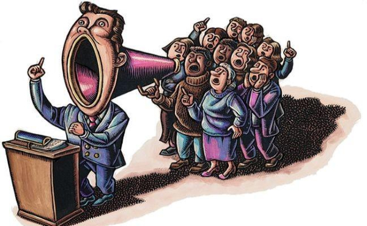

Este site é um trabalho escolar, criado por Samuel Oliveira Rodrigues da Silva do 7°/B
O que é Democracia
Como diria Aristóteles, o ser humano é um animal político, mas a maioria das pessoas não sabe muito sobre a própria política. Uma das palavras que mais gera dúvidas é a chamada "Democracia".
De forma mais formal, Democracia é um regime político em que todos os cidadãos elegíveis participam igualmente — diretamente ou através de representantes eleitos — na proposta, no desenvolvimento e na criação de leis, exercendo o poder da governação através do sufrágio universal. Ok ok, eu sei que poucos entenderam esta definição, então tentarei lhe explicar de forma que você entenda o melhor possível.
A palavra democracia tem origem da palavra grega "demokratía" que vem de "demo" que significa povo e "kratos" que significa poder.
Existem três formas de Democracia, são elas: (Obs: clique nos tipos de democracia para ver sua definição).
-
Uma democracia direta é qualquer forma de organização na qual todos os cidadãos podem participar diretamente no processo de tomada de decisões.
É uma forma de governar em que a população participam das escolhas politicas, como por exemplo votam no seu governante.

-
Democracia representativa ou democracia indireta é uma forma de governo em que o povo elege representantes que possam defender, gerir, estabelecer e executar todos os interesses da população.
É o que mais estamos acostumados a ver.

-
Democracia participativa é um modelo de exercício de poder, onde a população participa ativamente na tomada das principais decisões políticas.

As principais funções da democracia são:
-
Liberdade de expressão
-
Liberdade de Religião
-
Proteção legal
-
Participação na vida política, economica e cultural da sociedade
O que é Legislação
Agora que você aprendeu o que é e os tipos de democracia, você está apto a aprender o que é legislação: Legislação é um conjunto de leis que regulariza determinada matéria ou ciência, ou ainda um conjunto de leis que organiza a vida de um país, ou seja, o que popularmente se chama de ordem jurídica e que estabelece condutas e ações aceitáveis ou recusáveis de um indivíduo, instituição, empresa, entre outros.
Tá bom desculpa... Vou simplificar o significado basicamente, legislação é o conjunto das leis de uma nação.
Obrigado por ler, me siga nas redes sociais ;) ⇒
Instagram
GitHub